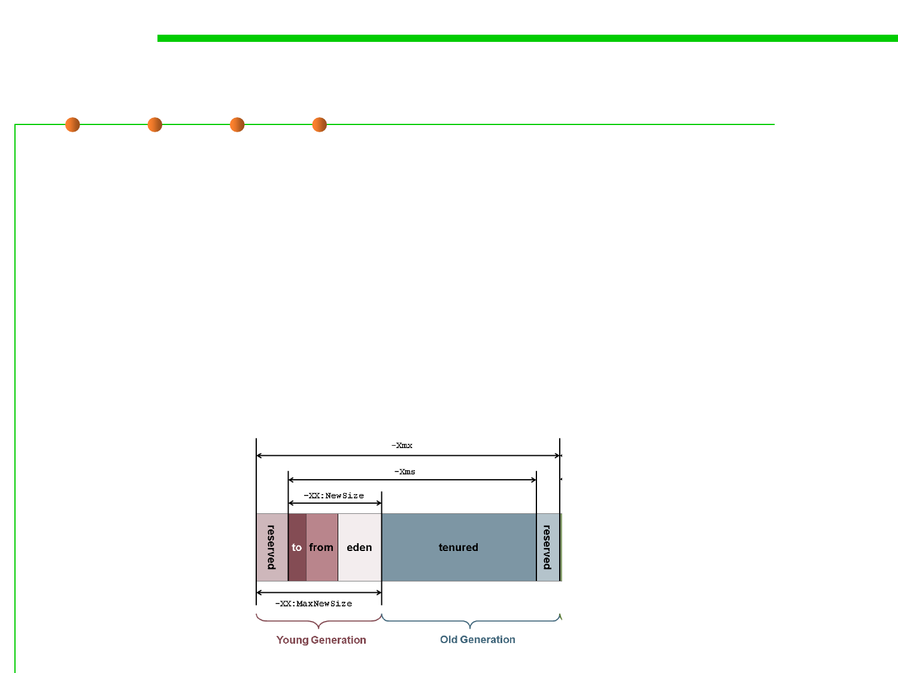

8.1 Metrics, Principles, and Methods of Construction for Performance
(1) Tuning VM Heap Size
▪ The young generation space is specified using any one of the
following command line options:
– -XX: NewSize=<n>[g|m|k] The initial and minimum size of the
young generation space. <n> is the size. [g|m|k] indicates whether the
size should be interpreted as gigabytes, megabytes, or kilobytes. 最小值
– -XX: MaxNewSize=<n>[g|m|k] The maximum size of the young
generation space. 最大值
– -Xmn<n>[g|m|k] Sets the initial, minimum, and maximum size of the
young generation space to the same value. 初始、最小、最大为同一值